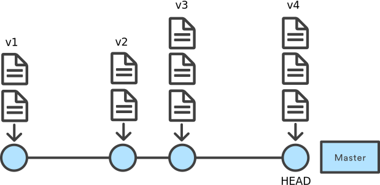
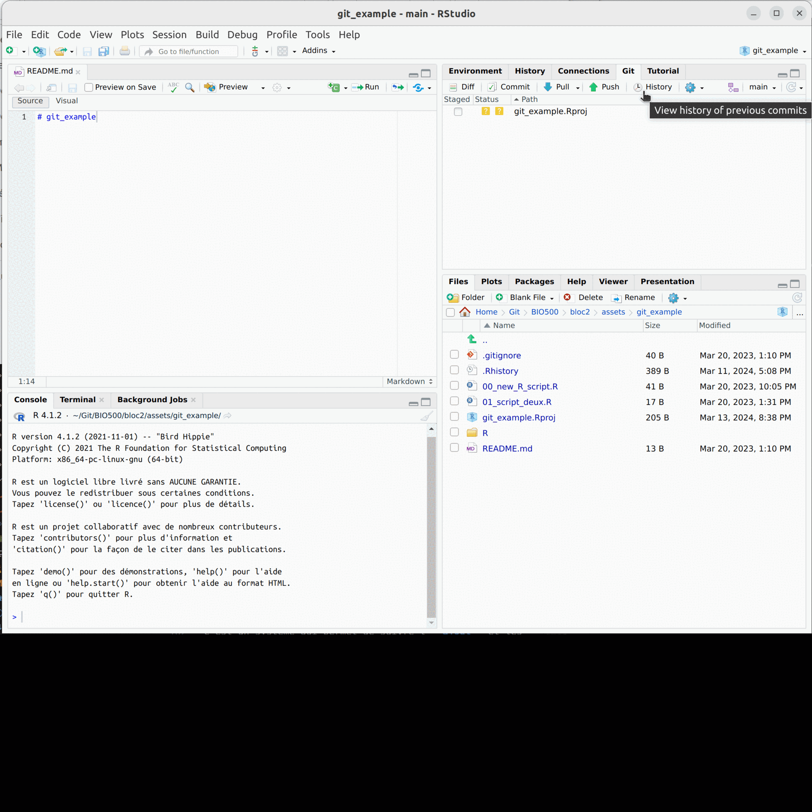
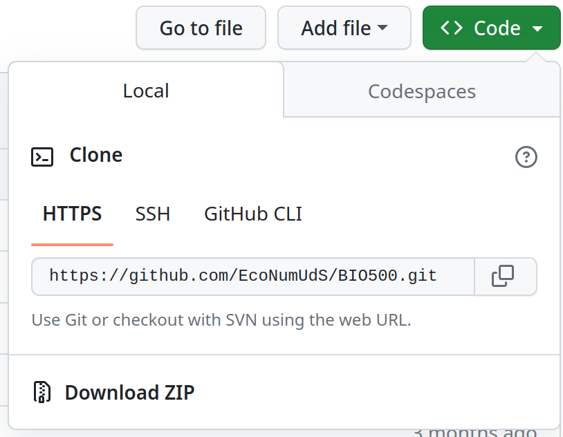
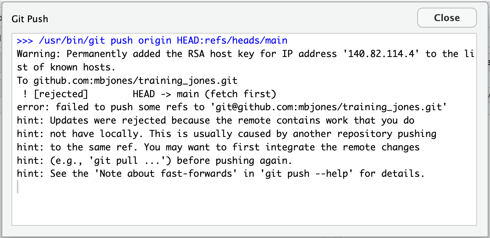

7 Git
Git est un système de contrôle de version pour programmeur. C’est un logiciel qui permet de suivre l’ajout et les modifications pour l’ensemble des fichiers d’un projet. D’une certaine façon, Git est le cahier de laboratoire du biologiste pour ce qui est de la sauvegarde, des analyses de données et de la rédaction.
7.1 Notions de base
Le principal avantage de Git réside dans sa capacité à suivre et à enregistrer les modifications apportées à un projet au fil du temps. Il permet aux collaborateurs de travailler simultanément sur différentes fonctionnalités, de fusionner leurs modifications et de revenir à des versions précédentes du code en cas de besoin.
Une branche (master par défaut) est une série de commentaires (commit) qui décrivent les modifications successives au projet. Chaque version du projet est associée à un commit. Le dernier commit est ce que l’on appelle la tête de la branche (HEAD), elle contient la version la plus récente des fichiers.

On interagit avec Git soit par le terminal, soit par RStudio. Pour les besoins du cours, nous nous limiterons à RStudio, mais sachez que certains conflits (erreurs) ne pourront être résolus que dans le terminal.
Commandes Git de base
RStudio facilite le travail avec Git à l’aide d’un simple onglet “Git” et avec un navigateur history qui vous permet de passer d’une version à l’autre et de visionner les modifications qui ont été enregistrées sous forme de commit. Cet onglet permet d’exécuter certaines opérations de base pour le contrôle de version.

Voici un petit lexique pour s’y retrouver :
Git clone
Cloner un projet hébergé sur GitHub vers votre machine locale. Cette opération est effectuée lors du démarrage d’un nouveau projet RStudio et est accessible dans le menu “File > New Project > Version Control > Git”.
Git pull
Récupérer les modifications des autres membres de l’équipe et se mettre à jour avec la version la plus récente du projet hébergé sur GitHub. À chaque fois que l’on ouvre un projet, il est approprié d’utiliser la commande “Pull” (un bouton sur l’interface git de RStudio) afin de récupérer les modifications des autres membres de l’équipe.
Git diff
Affiche les modifications aux fichiers qui ne sont pas encore associés à un commit.
Git commit
Crée un nouveau commit avec les modifications de l’index et associe un message descriptif.
Git log ou “History”
Affiche l’historique des commits avec les informations associées, tels que les auteurs, les dates et les messages de commit.
Git push
Téléverse vos commits vers le répertoire du projet GitHub.
Git branch
Affiche la liste des branches.
Git revert
Abandonne toutes modifications aux fichiers sélectionnés.
Git merge
Fusionne une branche spécifiée dans la branche active.
Les fonctionnalités de git sont immenses et RStudio permet de bien les utiliser. Un tutoriel complet est disponible à https://happygitwithr.com/rstudio-git-github.html.
Github
GitHub est le serveur cloud du logiciel Git, comme OneDrive l’est pour d’autres types de fichiers. On peut y sauver les fichiers text (csv, R, md, …) et l’historique du travail (commits, branches). Cela permet de collaborer à plusieurs partenaires sur un même projet.
7.2 Débuter avec Git
Pour débuter avec Git, il faut d’abord s’assurer que les prérequis sont bien installés et configurés. Ensuite, il faut créer un dépôt GitHub en ligne et l’associer à RStudio. Enfin, il faut apprendre à enregistrer les modifications, à revenir en arrière et à récupérer les modifications des co-équipiers.
0. Prérequis
Un bon point de départ est d’explorer l’interface web de GitHub. Accéder à la page du cours BIO500 et observer l’organisation des fichiers et les fonctionnalités présentées : (https://github.com/EcoNumUdS/BIO500)[https://github.com/EcoNumUdS/BIO500]
0.1. Avoir un compte GitHub
Aller à la page d’accueil de GitHub https://github.com. Sélectionner “sign up” et entrer les informations demandées.
0.2. R et RStudio sont installés et mis à jour
- Vérifier la version de
Rinstallée sur votre machine. Une version supérieure à 4.1.1 est recommandée.
R.version.string
[1] "R version 4.2.2 Patched (2022-11-10 r83330)"Besoin de mettre à jour RStudio ? Télécharger la dernière version ici : https://posit.co/download/rstudio-desktop/
Mettre à jour les librairies installées sur votre ordinateur :
update.packages(ask = FALSE, checkBuilt = TRUE)0.3. Git est installé
Windows
Git doit être installé sur les systèmes Windows. Instructions pour Windows : https://git-scm.com/download/win.
Mac
Git est installé par défaut sur les ordinateurs Mac. Il suffit de vérifier la version installée :
Ouvrir le terminal et saisir la commande suivante :
git versionSi la commande n’est pas reconnue, il faut installer git. Instructions pour Mac : http://git-scm.com/download/mac.
0.4. Git est associé avec GitHub
Il peut être nécessaire de configurer git pour qu’il puisse communiquer avec github. Cette étape se fait plus facilement avec le package usethis dans la console de RStudio :
# Installer le package usethis
install.packages("usethis")
## Enregistrer les informations de l'utilisateur :
usethis::use_git_config(user.name = "YourName", user.email = "your@mail.com")
## Créer un jeton d'accès :
usethis::create_github_token()
### Définir la date d'expiration comme "Aucune expiration"
### Copier le jeton d'accès dans le presse-papier (et votre gestionnaire de mot de passe)
## Enregistrer le jeton d'accès :
credentials::set_github_pat()
# gitcreds::gitcreds_set()
## Redémarrer R !!!Il faut vérifier que git est bien configuré :
usethis::git_sitrep()
## Votre nom d'utilisateur et e-mail devraient être
## correctement retournés.
## Aussi, le rapport devrait contenir quelque chose comme ceci :
## 'Personal access token: '<found in env var>''
## Si un message d'erreur persiste, vérifier que le fichier .Renviron est bien configuré :
## Appeler `usethis::edit_r_environ()` pour mettre à jour le fichier manuellement.1. Créer un dépôt GitHub en ligne
Accédez à GitHub et connectez-vous à votre compte. Près de l’onglet “Repositories”, sélectionnez le bouton vert ‘New’ pour créer un nouveau dépôt et suivre les instructions. Les options recommandées sont :
- Repository template: No template.
- Repository name: Le nom de votre projet.
- Description: Une description du répertoire (non requis).
- Public.
Il est plus facile de collaborer avec des dépôts publics. D’autres utilisateurs peuvent voir votre code et être invité à y contribuer. Les dépôt publiques seront utiles pour votre projet final qui se fait en équipe.
Bien structurer son projet
!!! Important de bien structurer son projet pour faciliter la collaboration et la reproductibilité. Voir la section Bien structurer son projet du chapitre Bonnes pratiques dédiée à ce sujet.
2. Associer le dépôt à RStudio
Sur le dépôt GitHub, cliquer sur le bouton “<> Code”. Assurez-vous de sélectionner l’URL “HTTPS”. Copier l’URL du dépôt.

Dans RStudio, créer un nouveau projet “Version Control” : File > New Project > Version Control > Git.
Si cette option n’est pas disponible, consulter l’assistance https://happygitwithr.com/rstudio-see-git.html.
- Copier l’URL dans “Repository URL” pour cloner le dépôt.
- Accepter le nom du projet par défaut. Celui-ci coincide avec le nom du répertoire GitHubé.
- S’assurer de sauver le dépôt au bon endroit sur l’ordinateur !
- Cliquer “Create Project”.
Si des fichiers sont déjà sauvés dans le répertoire GitHub, ils seront téléchargés dans le projet RStudio.
On peut ouvrir le projet ultérieurement avec File > Open project en sélectionnant le fichier avec l’extension .Rproj.
3. Enregistrer les modifications
Après avoir effectué des modifications aux fichiers du projet, sauver ces modifications. Par exemple, ajouter “Ceci est une ligne ajoutée à la description du projet.” au fichier README.md et sauver la modification.
- Sélectionner l’onglet git dans le quadrant supérieur droit.
- Ouvrir la fenêtre commit pour enregistrer les modifications.
- Cocher (staged) les fichiers modifiés que vous souhaitez enregistrer.
- Résumer les modifications en une courte phrase (message de commit) et puis cliquer sur le bouton commit pour enregistrer les modifications.
- Cliquer sur le bouton “Push” pour téléverser les modifications vers le répertoire (serveur) GitHub.
- Valider en ligne sur votre répertoire GitHub si les modifications ont été ajoutées.
4. Revenir en arrière
Les commandes de git sont très efficaces et puissantes, elles peuvent néanmoins être fastidieuses et difficiles pour les débutants.
RStudio facilite ce travail avec un simple onglet “history” et avec un navigateur qui vous permet de passer d’une version à l’autre et de mettre en valeur les modifications qui ont été enregistrées sous forme de commit.
5. Récupérer les modifications de co-équipiers
Git a été spécifiquement créé pour travailler en équipe. Plusieurs utilisateurs peuvent se connecter au même répertoire et y apporter des modifications. Cependant, le répertoire en ligne GitHub est la version du projet à laquelle tous les utilisateurs contribuent. Il faut être rigoureux et fréquemment y téléverser ses modifications pour les rendre accessibles aux autres (push). Il faut également récupérer les modifications des autres membres de l’équipe (pull).
Les restrictions d’accès au répertoire GitHub et les invitations peuvent être gérées à partir du site web du répertoire.
La collaboration entraine parfois des conflits entre versions. Ceci est particulièrement fréquent lorsqu’on oublie d’effectuer un Push ou un Pull pendant un certain temps. La section suivante détaille les conflits couramment rencontrés.
6. Supprimer un dépôt
Si vous souhaitez supprimer un dépôt de votre ordinateur, il suffit de supprimer le répertoire (dossier) du projet sur votre ordinateur. Il s’agit d’un dossier standard. Si vous souhaitez supprimer le dépôt de GitHub, allez dans les paramètres du répertoire et sélectionner “Delete this repository”.
7.3 Conflits
L’utilisation de Git pour la collaboration entraine parfois des conflits entre versions lorsque des modifications incompatibles sont apportées au même fichier, aux mêmes lignes de code ou lorsque des renommages de fichiers entraînent des conflits de nommage.
Ces conflits sont des situations normales lors de la collaboration avec Git. Lorsqu’un conflit se produit, Git marque les zones conflictuelles dans les fichiers concernés et il vous revient de les résoudre en choisissant quelles modifications garder ou en effectuant des ajustements manuellement.
Par exemple, vous éditez le fichier README.md et ajoutez une ligne de texte. Pendant ce temps, un collaborateur modifie également le fichier README.md et ajoute une autre ligne de texte. Lorsque vous essayez de push vos modifications, Git détecte un conflit entre les deux versions du fichier et vous empêche de continuer tant que le conflit n’est pas résolu.
- Ouvrir l’onglet Git dans RStudio et cliquer sur le bouton
pullpour récupérer les modifications du répertoire GitHub. Si un conflit est détecté, un message d’erreur apparaît dans la console RStudio. Par exemple :

- Inspecter les fichiers affectés par le conflit. Dans cet exemple, le fichier README.md est en conflit.

- Ouvrir le fichier en conflit et résoudre le conflit manuellement. Les lignes de code en conflit sont délimitées par des balises spéciales. Les modifications entrant depuis le répertoire GitHub (HEAD) suivent la ligne
<<<<<<< HEAD. Vous verrez ensuite=======qui divise les modifications entrantes des modifications locales. Les modifications locales suivent la ligne>>>>>>> branch-name. Par exemple :
# BIO500 H2025
Mon répertoire de travail pour le cours BIO500.
<<<<<<< HEAD
Nouvelle description du projet.
=======
Description initiale du projet.
>>>>>>> 1234567890abcdef1234567890abcdef12345678- Choisir les modifications à conserver et supprimer les balises de conflit. Dans cet exemple, on choisit de conserver la description initiale du projet. Le fichier modifié devrait ressembler à ceci :
# BIO500 H2025
Mon répertoire de travail pour le cours BIO500.
Description initiale du projet.Après avoir résolu le conflit, ajouter les fichiers modifiés à l’index (staging).
Commiter (commit) les modifications et pousser (push) les modifications vers le répertoire GitHub.
En cas de conflit, un message apparait dans la console RStudio indiquant la nature du problème. Il est fortement recommandé de copier-coller le message dans un moteur de recherche pour plus d’information. Toutefois, vous devez obligatoirement résoudre le conflit en choisissant les modifications à garder ou en effectuant des ajustements manuellement.